Thickness Control for a Steel Beam
This demo shows how to design a MIMO LQG regulator to control the horizontal and vertical thickness of a steel beam in a hot steel rolling mill.
Contents
Rolling Stand Model
Figures 1 and 2 depict the process of shaping a beam of hot steel by compressing it with rolling cylinders.
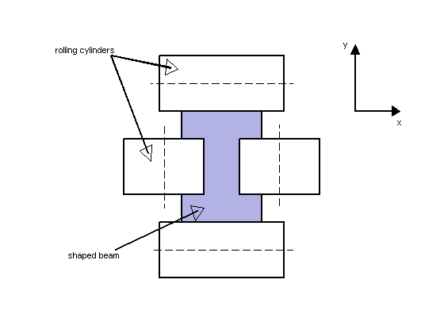
Figure 1: Beam Shaping by Rolling Cylinders.
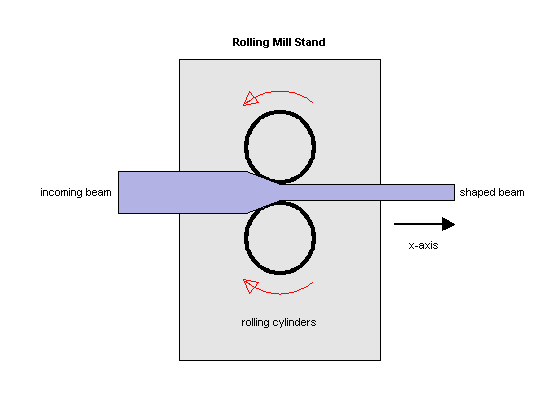
Figure 2: Rolling Mill Stand.
The desired H shape is impressed by two pairs of rolling cylinders (one per axis) positioned by hydraulic actuators. The gap between the two cylinders is called the roll gap. The goal is to maintain the x and y thickness within specified tolerances. Thickness variations arise primarily from variations in thickness and hardness of the incoming beam (input disturbance) and eccentricities of the rolling cylinders.
An open-loop model for the x or y axes is shown in Figure 3. The eccentricity disturbance is modeled as white noise w_e driving a band-pass filter Fe. The input thickness disturbance is modeled as white noise w_i driving a low-pass filter Fi. Feedback control is necessary to counter such disturbances. Because the roll gap delta cannot be measured close to the stand, the rolling force f is used for feedback.

Figure 3: Open-Loop Model.
Building the Open-Loop Model
Empirical models for the filters Fe and Fi for the x axis are
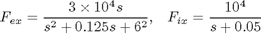
and the actuator and gap-to-force gain are modeled as
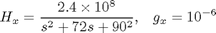
To construct the open-loop model in Figure 3, start by specifying each block:
Hx = tf(2.4e8 , [1 72 90^2] , 'inputname' , 'u_x'); Fex = tf([3e4 0] , [1 0.125 6^2] , 'inputname' , 'w_{ex}'); Fix = tf(1e4 , [1 0.05] , 'inputname' , 'w_{ix}'); gx = 1e-6;
Next construct the transfer function from u,we,wi to f1,f2 using concatenation and append as follows. To improve numerical accuracy, switch to the state-space representation before you connect models:
T = append([ss(Hx) Fex],Fix);
Finally, apply the transformation mapping f1,f2 to delta,f:
Px = [-gx gx;1 1] * T;
Px.OutputName = {'x-gap' , 'x-force'};
Plot the frequency response magnitude from the normalized disturbances w_e and w_i to the outputs:
bodemag(Px(: , [2 3]),{1e-2,1e2}), grid
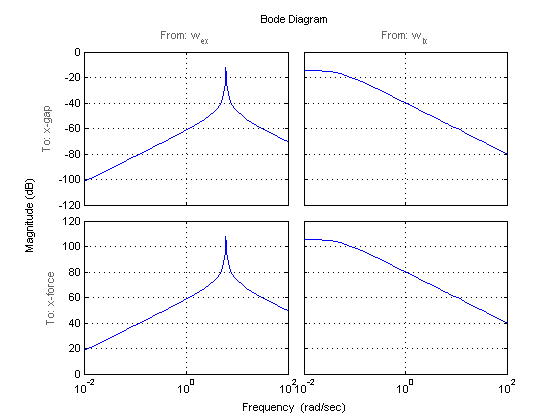 Note the peak at 6 rad/sec corresponding to the (periodic) eccentricity disturbance.
LQG Regulator Design for the X Axis
First design an LQG regulator to attenuate the thickness variations due to the eccentricity and input thickness disturbances w_e and w_i. LQG regulators generate actuator commands u = -K x_e where x_e is an estimate of the plant states. This estimate is derived from available measurements of the rolling force f using an observer called "Kalman filter."
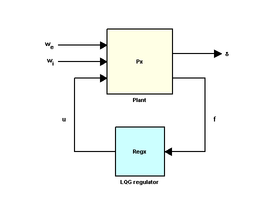
Figure 4: LQG Control Structure.
Use lqry to calculate a suitable state-feedback gain K. The gain K is chosen to minimize a cost function of the form
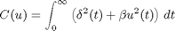
where the parameter beta is used to trade off performance and control effort. For beta = 1e-4, you can compute the optimal gain by typing
Pxdes = Px('x-gap','u_x'); % transfer u_x -> x-gap Kx = lqry(Pxdes,1,1e-4)
Kx =
0.0621 0.1315 0.0222 -0.0008 -0.0074
Next, use kalman to design a Kalman estimator for the plant states. Set the measurement noise covariance to 1e4 to limit the gain at high frequencies:
Ex = kalman(Px('x-force',:),eye(2),1e4);
Finally, use lqgreg to assemble the LQG regulator Regx from Kx and Ex:
Regx = lqgreg(Ex,Kx); zpk(Regx)
Zero/pole/gain from input "x-force" to output "u_x":
-0.012546 (s+10.97) (s-2.395) (s^2 + 72s + 8100)
-----------------------------------------------------------
(s+207.7) (s^2 + 0.738s + 32.33) (s^2 + 310.7s + 2.536e004)
Input groups:
Name Channels
Measurement 1
Output groups:
Name Channels
Controls 1
bode(Regx),
grid, title('LQG Regulator')
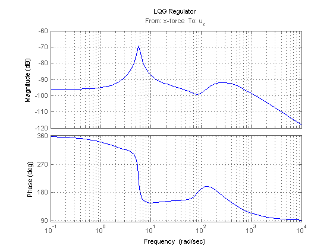 LQG Regulator Evaluation
Close the regulation loop shown in Figure 4:
clx = feedback(Px,Regx,1,2,+1);
Note that in this command, the +1 accounts for the fact that lqgreg computes a positive feedback compensator.
You can now compare the open- and closed-loop responses to eccentricity and input thickness disturbances:
bodemag(Px(1,2:3),'b',clx(1,2:3),'r',{1e-1,1e2}) grid, legend('Open Loop','Closed Loop')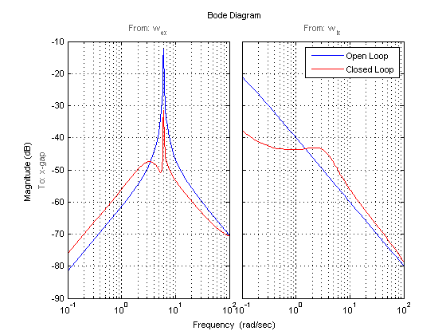
The Bode plot indicates a 20 dB attenuation of disturbance effects. You can confirm this by simulating disturbance-induced thickness variations with and without the LQG regulator as follows:
dt = 0.01; % simulation time step t = 0:dt:30; wx = sqrt(1/dt) * randn(2,length(t)); % sampled driving noise h = lsimplot(Px(1,2:3),'b',clx(1,2:3),'r',wx,t); set(h.Input,'Visible','off'); legend('Open Loop','Closed Loop')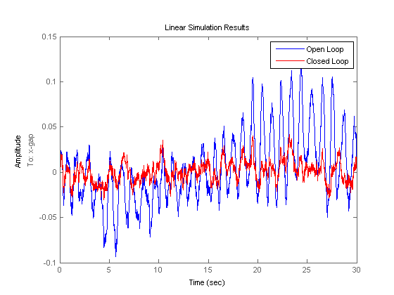
Two-Axis Design
You can design a similar LQG regulator for the y axis. Use the following actuator, gain, and disturbance models:
Hy = tf(7.8e8,[1 71 88^2],'inputname','u_y'); Fiy = tf(2e4,[1 0.05],'inputname','w_{iy}'); Fey = tf([1e5 0],[1 0.19 9.4^2],'inputn','w_{ey}'); gy = 0.5e-6;
You can construct the open-loop model by typing
Py = append([ss(Hy) Fey],Fiy); Py = [-gy gy;1 1] * Py; set(Py,'outputn',{'y-gap' 'y-force'})
You can then compute the corresponding LQG regulator by typing
ky = lqry(Py(1,1),1,1e-4); Ey = kalman(Py(2,:),eye(2),1e4); Regy = lqgreg(Ey,ky);
Assuming the x- and y-axis are decoupled, you can use these two regulators independently to control the two-axis rolling mill.
Cross-Coupling Effects
Treating each axis separately is valid as long as they are fairly decoupled. Unfortunately, rolling mills have some amount of cross-coupling between axes because an increase in force along x compresses the material and causes a relative decrease in force along the y axis.
Cross-coupling effects are modeled as shown in Figure 5 with gxy=0.1 and gyx=0.4.
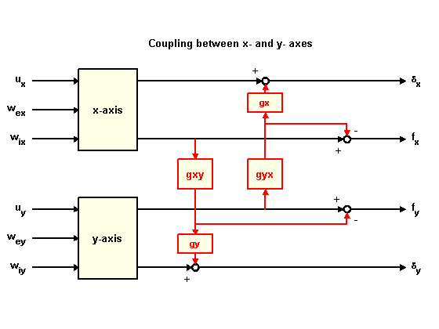
Figure 5: Cross-Coupling Model.
To study the effect of cross-coupling on decoupled SISO loops, construct the two-axis model in Figure 5 and close the x- and y-axis loops using the previously designed LQG regulators:
gxy = 0.1; gyx = 0.4; P = append(Px,Py); % Append x- and y-axis models P = P([1 3 2 4],[1 4 2 3 5 6]); % Reorder inputs and outputs CC = [1 0 0 gyx*gx ;... % Cross-coupling matrix 0 1 gxy*gy 0 ;... 0 0 1 -gyx ;... 0 0 -gxy 1 ]; Pxy = CC * P; % Cross-coupling model Pxy.outputn = P.outputn; clxy0 = feedback(Pxy,append(Regx,Regy),1:2,3:4,+1);
Now, simulate the x and y thickness gaps for the two-axis model:
wy = sqrt(1/dt) * randn(2,length(t)); % y-axis disturbances wxy = [wx ; wy]; h = lsimplot(Pxy(1:2,3:6),'b',clxy0(1:2,3:6),'r',wxy,t); set(h.Input,'Visible','off'); legend('Open Loop','Closed Loop')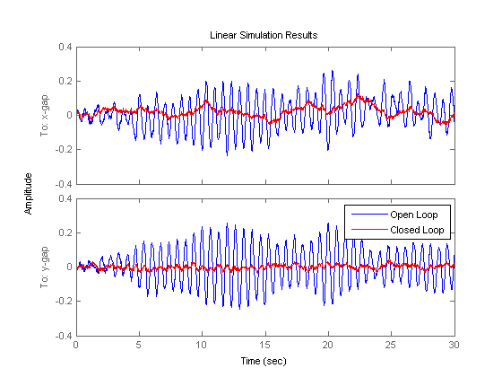
Note the high thickness variations along the x axis. Treating each axis separately is inadequate and you need to use a joint-axis, MIMO design to correctly handle cross-coupling effects.
MIMO Design
The MIMO design consists of a single regulator that uses both force measurements fx and fy to compute the actuator commands, u_x and u_y. This control architecture is depicted in Figure 6.
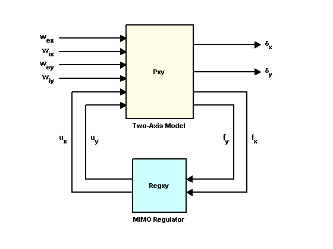
Figure 6: MIMO Control Structure.
You can design a MIMO LQG regulator for the two-axis model using the exact same steps as for earlier SISO designs. First, compute the state feedback gain, then compute the state estimator, and finally assemble these two components using lqgreg. Use the following commands to perform these steps:
Kxy = lqry(Pxy(1:2,1:2),eye(2),1e-4*eye(2)); Exy = kalman(Pxy(3:4,:),eye(4),1e4*eye(2)); Regxy = lqgreg(Exy,Kxy);
To compare the performance of the MIMO and multi-loop SISO designs, close the MIMO loop in Figure 6:
clxy = feedback(Pxy,Regxy,1:2,3:4,+1);
Then, simulate the x and y thickness gaps for the two-axis model:
h = lsimplot(Pxy(1:2,3:6),'b',clxy(1:2,3:6),'r',wxy,t); set(h.Input,'Visible','off'); legend('Open Loop','Closed Loop')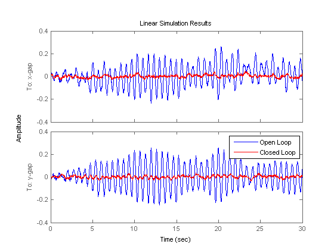
The MIMO design shows no performance loss in the x axis and the disturbance attenuation levels now match those obtained for each individual axis. The improvement is also evident when comparing the principal gains of the closed-loop responses from input disturbances to thickness gaps x-gap, y-gap:
sigma(clxy0(1:2,3:6),'b',clxy(1:2,3:6),'r',{1e-2,1e2}) grid, legend('Two SISO Loops','MIMO Loop')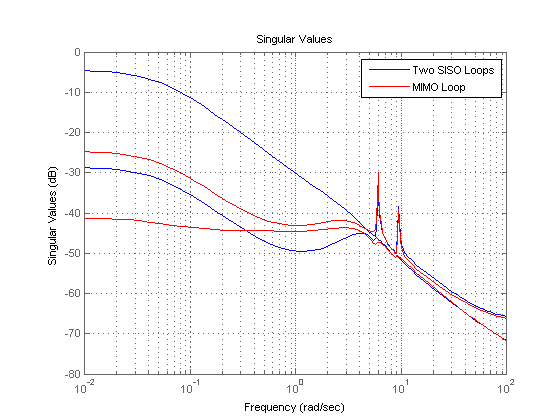
Note how the MIMO regulator does a better job at keeping the gain equally low in all directions.
Simulink® Model
If you are a Simulink® user, click on the link below to open a companion Simulink® model that implements both multi-loop SISO and MIMO control architectures. You can use this model to compare both designs by switching between designs during simulation.
Open Simulink model of two-axis rolling mill.
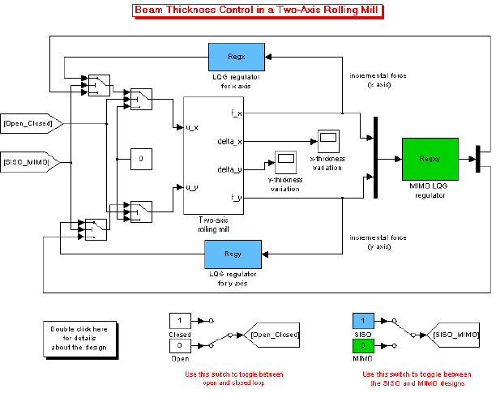